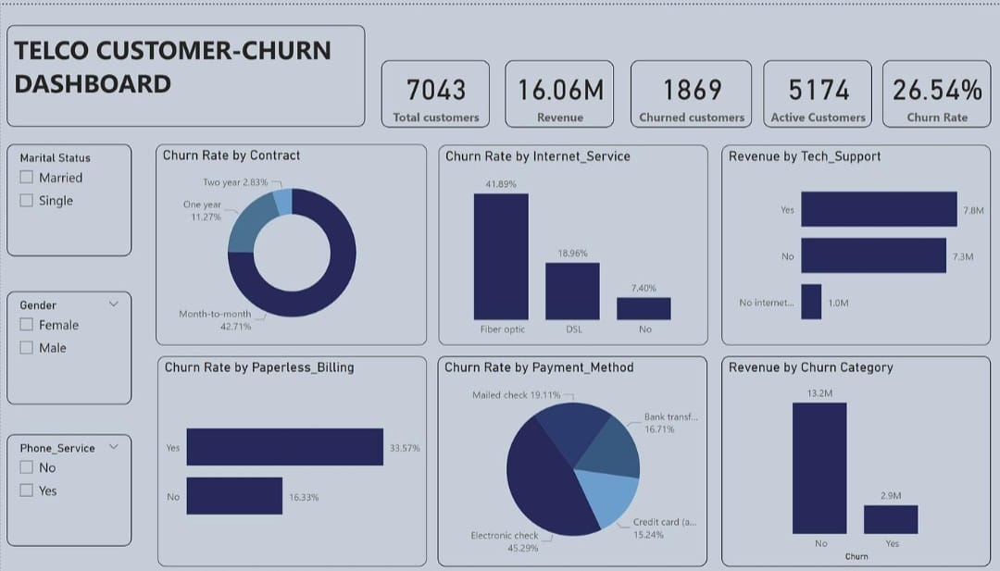

April 29, 2026
Final-year Business Analytics student at IIUI. I specialize in D-A, dashboard development, and customer analytics using "Excel, SQL, Power BI, Tableau, and R".
My work focuses on solving real-world business problems, particularly in telecom analytics and customer churn prediction

Developed a data-driven solution to predict customer churn using ML-techniques. The project analyzes customer behavior, usage patterns, and service interactions to identify customers at risk of leaving.
Key Contributions:
- Performed data cleaning and preprocessing
- Conducted exploratory data analysis (EDA)
- Built a churn prediction model
- Designed a dashboard for churn insights
- Suggested customer retention strategies
Tools Used:
Excel | SQL | Power BI | Tableau | R Language | Machine Learning
Developed an interactive sales performance dashboard to analyze business revenue, monitor key performance indicators (KPIs), and identify trends in customer activity and product sales. The dashboard provides a clear overview of sales performance across different time periods, regions, and product categories, enabling better decision-making.
The dashboard helps stakeholders quickly understand performance metrics, compare results over time, and identify opportunities for improving sales strategies and customer engagement.
Key Features:
- Sales revenue analysis by month, region, and category
- KPI tracking (Total Sales, Profit, Growth Rate)
- Trend analysis and performance comparison
- Identification of top-performing products and customers
- Interactive filters for dynamic data exploration
Tools Used:
- Excel
- Power BI
- Tableau
- SQL